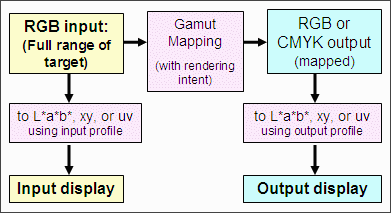
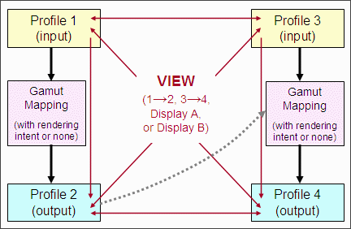
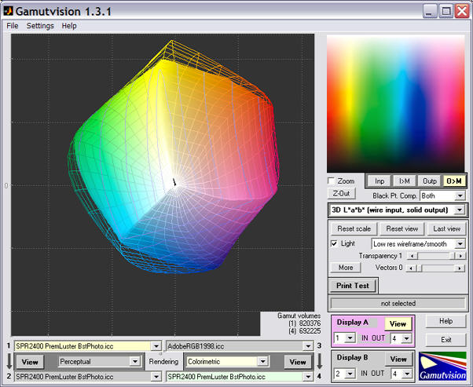
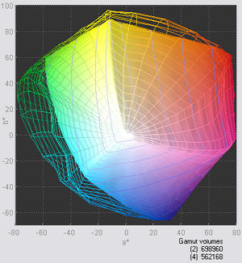
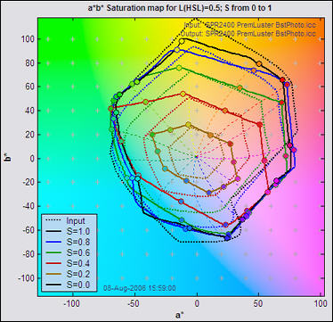
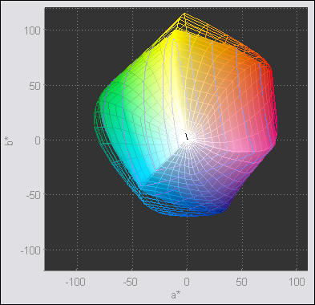

A key question that arises in every photographer's digital workflow is, "How will the print compare to the monitor image?"
There is an important difference between a printer's total (maximum) gamut and the actual gamut achieved when printing from a working color space. With Gamutvision you can display both and compare them side-by-side.
To see the difference, let's review Gamutvision's data flow. The total gamut of a device is obtained when its ICC profile is used as an input profile, i.e., one of the RGB gamut patterns (RGB input) is mapped to L*a*b*, xy, or uv using the profile. The total gamut for an output profile can be obtained by setting the rendering intent to None, in which case the mapped RGB output is the same as the input. Numerous display options are available. |
 |
This broader picture Gamutvision's structure suggests some display possibilities. You can select up to four ICC profiles: two input profiles and two output profiles.
|
 |
You might, for example,

Mapped (solid) vs. total (wireframe) gamut
For clarity, the background color has been set to 0.2 using the button. You can enlarge the gamut image considerably by clicking , then selecting a value for 3D plot axis setting other than the default vis3d. Although the image will be larger the a*b* axes may not display properly.
For example, to compare the effects of two working color spaces with a single printer/profile combination, you would enter the two working color space profiles into input Profiles 1 and 3 and the same printer profile into output Profiles 2 and 4. You could then view profiles 1 and 2 or 3 and 4 (showing the effects of the gamut mapping), or you could use a Display box (A or B, shown below) to compare the output gamuts in profiles 2 and 4. The gamuts for Epson R2400 Premium Luster prints made from Adobe RGB (1998) (wireframe) and sRGB (solid) working color spaces are shown on the right, using the 3D L*a*b* display set to . (Displays on this page use Epson-supplied X-rite "premium" profiles, released around October 2005; different from earlier profiles supplied with the R2400). |
 Mapped gamuts from sRGB (solid), and Adobe RGB (1998) (wireframe) |
To see the entire gamut of a printer profile you should always use the 3D L*a*b* view, set for Top view. You should never use the 2D a*b* Saturation view, which works well for color space profiles or mapped printer profiles, but does not work well when a printer profile is used as an input profile or an output profile with Rendering set to None. The reason: The 2D a*b* Saturation map is based on a gamut image where L(HSL) = 0.5. (This is L in the HSL color representation, not L*.) In normal color spaces, colors have their maximum saturation where L(HSL) = 0.5. But printers are highly nonlinear devices: they don't necessarily reach maximum saturation at for L(HSL) = 0.5; hence the 2D a*b* saturation map can produce the strange result shown on the left, which is not the true device gamut.
Mapped vs. total gamuts (displayed incorrectly (left) and correctly (right)) |
|
 |
 3D L*a*b* (top view): correct |
Comparing the gamut of Adobe RGB (1998) mapped with (relative) colorimetric rendering intent to Epson R2400 Premium Luster (output profile) to the total gamut of Epson R2400 Premium Luster (input profile) |
|